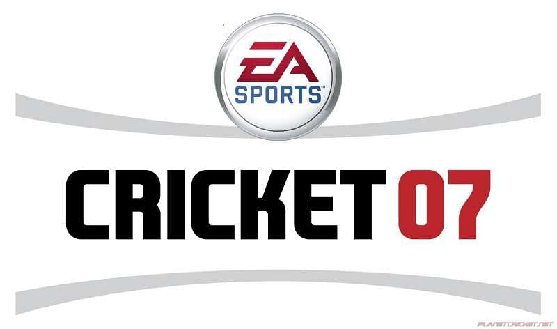
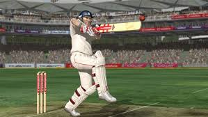
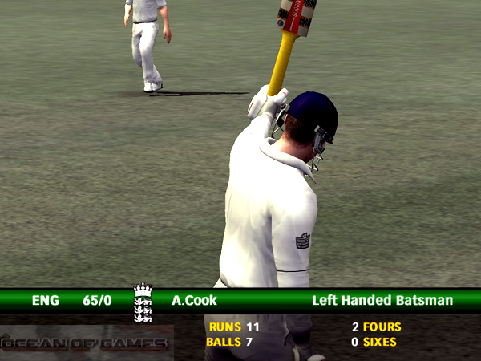

Cricket 07 Download Free PC game setup in single direct link for Windows. It is very interesting sports game which is based on cricket.
This is most exciting game and feast for all cricket fans and it has been composed of several different playing modes. You can either opt for a limited over game mode or go four day first class mode. In the limited over mode you can select from 5 overs to 50 overs. This game has got several different tournaments which included world cup, world series. Knockout tournament as well as world renowned ashes series. It is very interesting to play and easy to download with simple unique method. Along with these tournaments you can play also test matches cricket team between two teams. In the ashes series mode you can play full matches plus you also have play some scenarios. A lots of 18 total teams have been included in this game. This game has got very stunning graphics and visuals effects that makes this game more attractive and enjoyable.

Click the download button below to start EA Sports Cricket 07 Free Download with direct link. It is the full version of the game. Don’t forget to run the game as administrator.
NOTICE: This game is already pre-installed for you, meaning you don’t have to install it. If you get any missing dll errors, make sure to look for a _Redist or _CommonRedist folder and install directx, vcredist and all other programs in that folder. You need these programs for the game to run. Look for a ‘HOW TO RUN GAME!!.txt’ file for more help. Also, be sure to right click the exe and always select “Run as administrator” if you’re having problems saving the game. Always disable your anti virus before extracting the game to prevent it from deleting the crack files.

